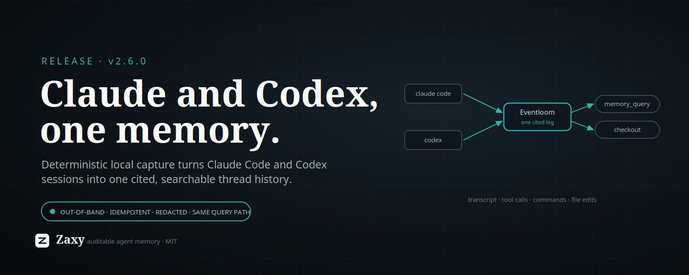

X Article Draft: Zaxy 2.6.0

Zaxy 2.6.0 makes agent thread history cross-tool: a zaxy claude-capture command that turns your local Claude Code sessions into the same cited, searchable Eventloom memory that zaxy codex-capture already produces. One project, two coding agents, one memory — searchable through the exact same query path, with no new retrieval surface to learn.
The short version: your work with an agent is the most valuable context you have, and it is normally trapped in that vendor's local session log, in that vendor's shape, readable by nothing else. 2.5 made memory portable out. 2.6 makes the two agents you actually code with capturable in, into one place, on equal terms.
What shipped
zaxy claude-capture reads Claude Code's own local session JSONL under ~/.claude/projects (or $CLAUDE_CONFIG_DIR) and imports each conversation into Eventloom as first-class normalized observations — the same event types Codex capture emits:
- transcript turns — user and assistant text (reasoning/thinking blocks are never ingested);
- tool calls — Read, Edit, Grep, Task, and the rest;
- commands — Bash invocations with their exit signal;
- file edits — Edit / Write / NotebookEdit targets.
Because those are the same event types, captured Claude turns flow through the same extraction → projection → hybrid retrieval path and surface through the existing memory_query MCP tool and memory checkout. There is deliberately no new search surface: unified Claude Code and Codex thread search falls out of reusing the path that already exists.
It is built to be safe to run unattended:
- Out-of-band. It reads the log Claude already writes; it never proxies model traffic.
- Workspace-scoped. Each session is matched to your project by the record's own
cwd, so only this repo's conversations are imported. - Idempotent. Turns are de-duplicated by source ref, so re-running — or a
--watchloop — only ever adds what is new. - Redacted. Transcript and command content pass through the same secret masking as Codex capture.
Run it one-shot, or --watch for continuous capture (--watch-iterations <n> for bounded supervisor/CI passes), and add --graph to project new observations into the graph immediately.
Why it matters
Memory that only knows about one tool is a silo with extra steps. The point of an event-sourced, cited memory layer is that provenance is the product — and provenance is far more useful when it spans the tools you actually switched between to get the work done. Ask "what did I change in the auth module and why" and get an answer drawn from both the Claude session where you reasoned about it and the Codex session where you ran the tests, each turn carrying an eventloom://…#<hash> citation back to the exact source.
This is also the boring, correct kind of feature: it ships by reusing the capture, projection, and query machinery that was already load-bearing for Codex, rather than bolting on a parallel "Claude path." Less surface, same guarantees.
The honest caveats
- Standalone today.
zaxy claude-captureis the one-shot and--watchcommand. It is not yet wired into the managed capture supervisor orzaxy initonboarding the way Codex capture is — there is no.claude/zaxy-capture.jsonand nozaxy activate claudein this release. The command covers both modes; the managed integration is next. - Top-level sessions. Capture scans the main session files; subagent turns are already inlined in those files, so the deeper
subagents/logs are intentionally skipped to avoid double-ingest. - Reasoning is never captured. Thinking blocks are dropped by design — parity with Codex, and a privacy/leanness choice, not an oversight.
Try it
# One-shot: import this repo's Claude Code sessions into Eventloom.
zaxy claude-capture --workspace . --eventloom-path .eventloom --session-id default
# Continuous capture, bounded for a supervisor or CI.
zaxy claude-capture --watch --watch-iterations 2
# Then search Claude + Codex turns through the existing surface.
zaxy memory checkout "what did I change in the auth module and why"Two agents, one cited log, one query. Memory you can search across the tools you actually work in — and still prove where every line came from.